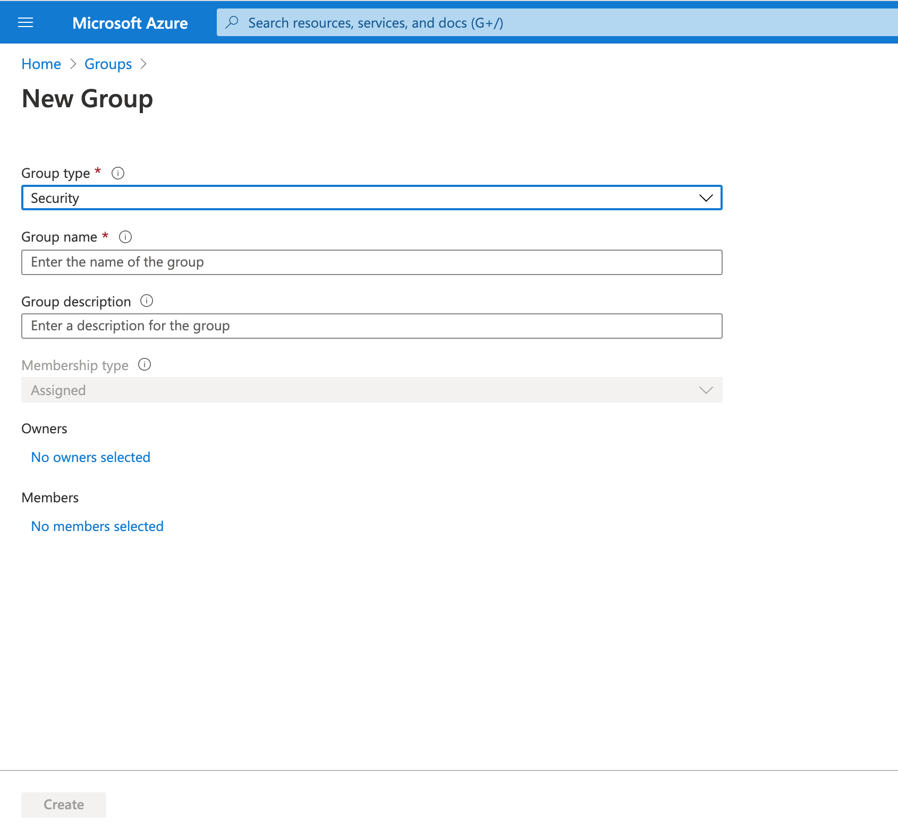
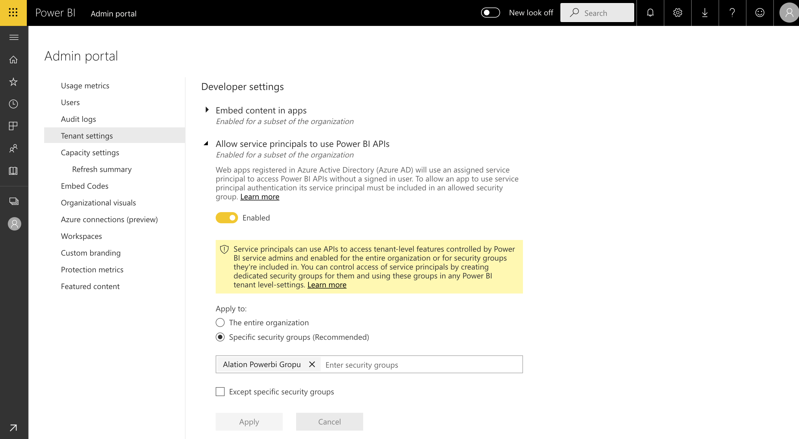
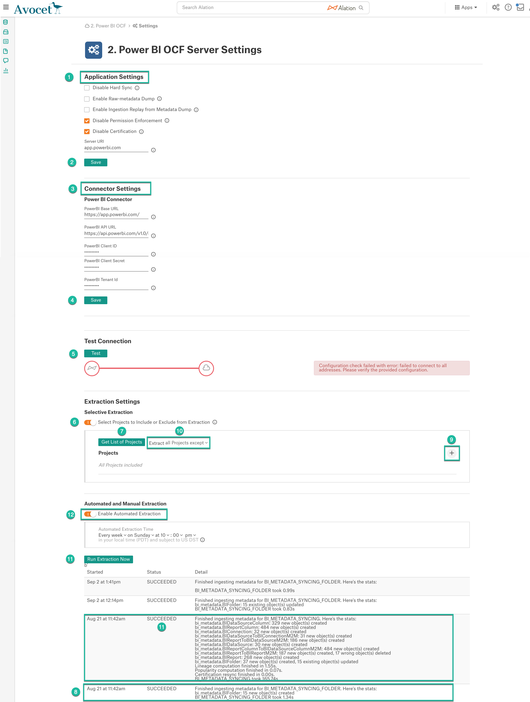
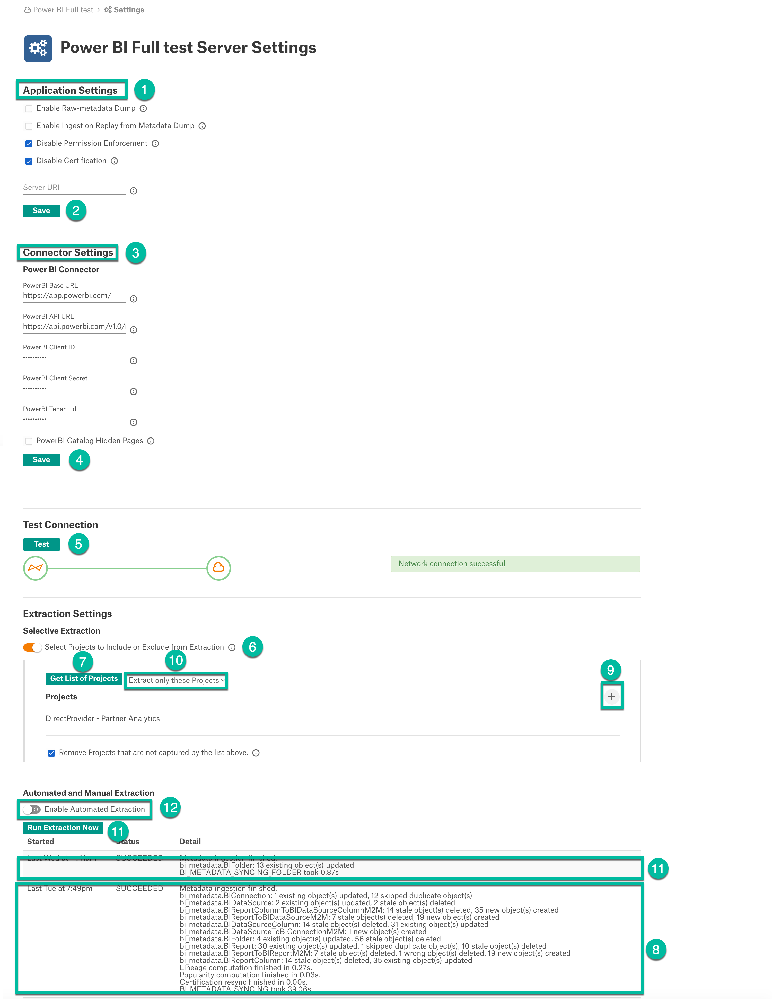
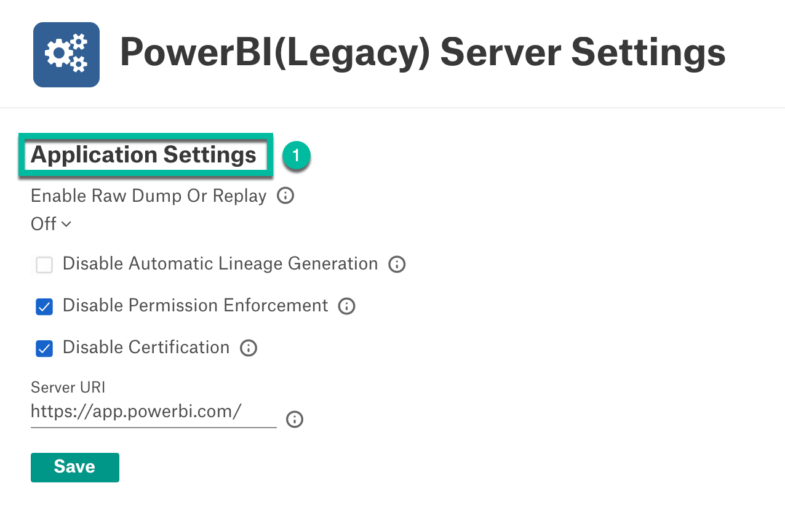

Azure Power BI OCF Connector (Legacy): Install and Configure¶
Alation Cloud Service Applies to Alation Cloud Service instances of Alation
Customer Managed Applies to customer-managed instances of Alation
Available from release 2020.4
Follow these steps to perform the necessary configuration for the Azure Power BI connector on the Power BI side and in Alation.
Preliminaries¶
Firewall Configuration¶
Open outbound TCP port 443 on Power BI Server for Rest API communication.
Authentication Requirements¶
Azure App registration
Power BI application registration credentials
I. Azure Power BI Setup and Authentication¶
STEP 1: Register an Application in Azure Portal¶
Navigate to App registrations in Microsoft Azure Portal.
Click New registration:
Provide the following information:
a name for the application
select the account types Accounts in this organizational directory only (<Org Name> only - Single tenant)
the Power BI URL as Redirect URI
Click Register.
On the next screen, note down Application (client) ID, Directory (tenant) ID, and Object ID:
On left-hand side of the page, click Certificates & secrets to generate the client secret:
Click New client secret under the Client secrets section and in the pop-up dialog provide the description for the client secret and click Add:
Note down the newly generated client secret. You will need it for the next configuration steps.
STEP 2: Create a Security Group for Azure Power BI¶
Navigate to the Groups management section of Azure Portal.
Add a new group and enter the following details:
Select Security for Group Type
Enter a Group Name and Description:
Under Members, add the app created in Step 1 as the Member of the group.
Click Create.
STEP 3: Enable Azure Power BI Service Admin Settings¶
For an Azure application to be able to access the Power BI content and APIs, a Power BI admin needs to set Enable service principal access and Export Data flags in the Power BI admin portal.
Login to Power BI.
From the Settings menu, select the Admin portal:
Navigate to Tenant Settings > Developer Settings and perform the following configuration:
Enable Allow service principals to use Power BI APIs
Choose Specific security groups and select the security group created in Step 2.
Click Apply to apply the settings:
Go to Export Settings under Tenant Settings:
If Export Data is already enabled for the entire organization, leave it as it is. If not, enable it for the security group created in Step 2:
Click Apply to apply the settings.
STEP 4: Add the Service Principal to Workspace¶
For the Azure app to access the content of a workspace, add the Service Principal as its member.
Select a workspace and choose Workspace access:
Select the app in the dialog:
Add the app as a Member and click Close.
II. Alation Setup and Authentication¶
STEP 1: Install the Connector¶
Important
Installation of an OCF connector requires Alation Connector Manager to be installed as a prerequisite.
If this has not been done on your instance, install Alation Connector Manager using the steps in: Install Alation Connector Manager.
Make sure that the OCF connector Zip file that you received from Alation is available on your local machine.
Install the connector on the Connectors Dashboard page: refer to Manage Connector Dashboard.
STEP 2: Create and Configure a New BI Server Source¶
Add a New BI Server Source¶
Log in to the Alation instance and add a new BI Server source: Apps > Sources > Add > BI Server. The Register a Business Intelligence Server screen will open.
On this screen, from the Select a Business Intelligence Server type list, select the Power BI connector name (POWERBI) and enter a Title and a Description.
Click Add. You will be navigated to your BI Server source Settings page.
Configure the Azure Power BI Source¶
Note
This section describes configuring settings for credentials and connection information stored in the Alation database. If your organization has configured Azure KeyVault or AWS Secrets Manager to hold such information, the user interface for the General Settings page will change to include the following icons to the right of most options:

{kind=link}
{kind=link}
{kind=link}
{kind=link}
{kind=link}
{kind=link}
{kind=link}
{kind=link}
{kind=link}
{kind=link}
{kind=link}
{kind=link}
{kind=link}
By default, the database icon is selected, as shown. In the vault case, instead of the actual credential information, you enter the ID of the secret. See Configure Secrets for OCF Connector Settings for details.
Perform the configuration on the Settings page:
Specify Application Settings:
Parameter
Description
Disable Hard Sync
Leave this checkbox unselected.
Selecting it will disable synchronization of BI objects between Alation and Power BI.
Note
This is not applicable from version 2021.2
Disable Automatic Lineage Generation
Select the Disable Automatic Lineage Generation checkbox to skip the creation of automatic Lineage after extraction. When automatic Lineage generation is disabled, during extraction Alation does not calculate Lineage data for this BI source.
For more information, see Automatic Lineage Generation FAQ.
Note
This is applicable from version 2021.3
Disable Permission Enforcement
Leave this checkbox selected.
Permission enforcement is not supported between Power BI and Alation.
Disable Certification
Leave this checkbox selected.
Certification of BI objects in Power BI from Alation is not supported.
Server URI
Enter the server URI used to access Power BI
Click Save to save the information you have entered.
Specify Connector Settings:
Parameter
Description
Power BI Base URL
Enter the URL to access Power BI. Default value is
https://app.powerbi.com/Power BI API URL
Enter the API URL to access Power BI APIs. Default value is
https://api.powerbi.com/v1.0/myorg/Power BI Client ID
Enter the Power BI Client ID.
Power BI Client Secret
Enter the Power BI Client Secret.
Power BI Tenant ID
Enter the Power BI Tenant ID.
Click Save.
Under Test Connection, click Test to validate network connectivity.
Under Extraction Settings, configure the metadata extraction. Turn on Selective Extraction, if required. Selective extraction settings are used to apply a filter to include or exclude a list of Workspaces.
Click Get List of Projects to first fetch the list of Workspaces from Power BI.
The status of the Get Projects action is logged in the Job History table at the bottom of the Settings page.
If the folder synchronization is successful, a drop-down list of Workspaces will become enabled. Select one or more Workspaces to extract.
Check the selected filter option. Available filter options are described below:
Filter Option
Description
Extract all Project except
Extract metadata from all Workspaces except from the workspaces selected.
Extract only these Projects
Extract metadata from only the selected Workspaces.
Click Run Extraction Now to extract metadata. The status of the Extraction action is also logged in the Job History table at the bottom of the page.
If you wish to automatically update the metadata in the Catalog, under Automated and Manual Extraction, turn on Enable Automated Extraction and select the day and time when metadata must be extracted. The metadata extraction will be automatically scheduled to run at the selected day and time.
Upto 2021.1:

From 2021.2:

From 2021.3:

Troubleshooting¶
Untitled Reports¶
Issue: Reports are cataloged in Alation as Untitled
Resolution: Edit the specific report visual in Power BI Desktop, make sure the Title bar is enabled, and provide a title for the visual. Publish the report to Azure.
Limitations¶
The Azure Power BI Connector extracts the measures and dimensions of a Report by exporting the PBIX file. There are some limitations to this export functionality from Microsoft: Considerations and troubleshooting.
The main limitations are summarized below:
If the administrator has turned off the ability to download data, the connector cannot download reports.
Datasets with incremental refresh cannot be downloaded to a PBIX file.
Datasets enabled for large models cannot be downloaded to a PBIX file: Large datasets in Power BI Premium.
Datasets modified by using the XMLA Endpoints cannot be downloaded.
If a Power BI report is based on a dataset in one workspace but is published to a different workspace, users will not be able to download it.
Parsing fails if the report size exceeds 500 MB.
FAQ¶
Is it possible to provide “Popularity” for Power BI objects, similar to the way this is provided for Tableau?¶
Power BI does not have an API that provides this information.
Is it possible to identify the report owner from Power BI?¶
Power BI does not have an API that provides this information.